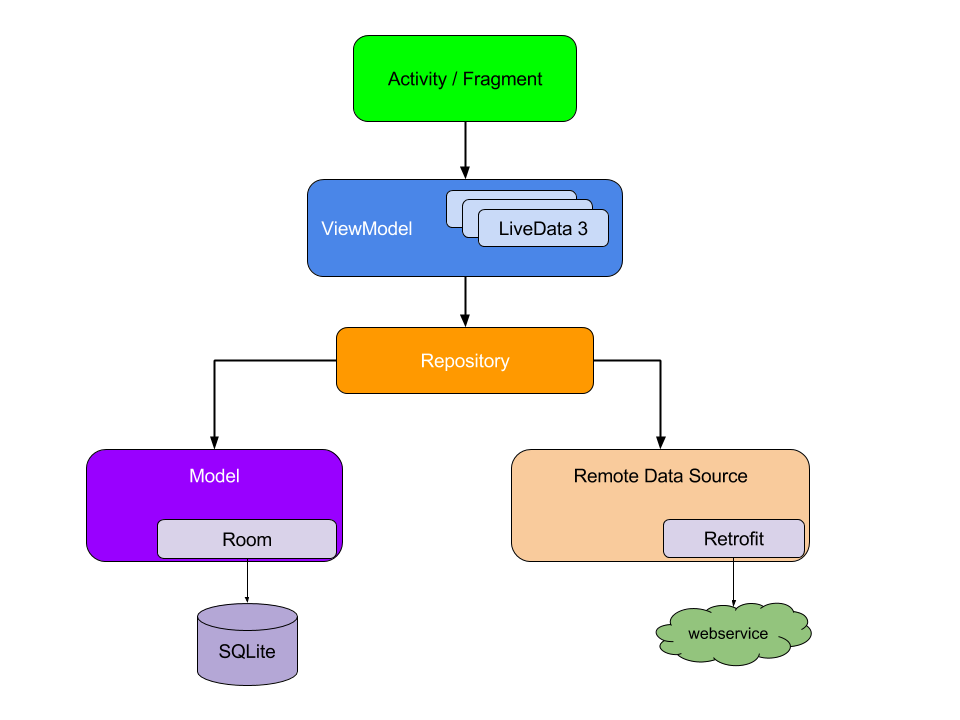
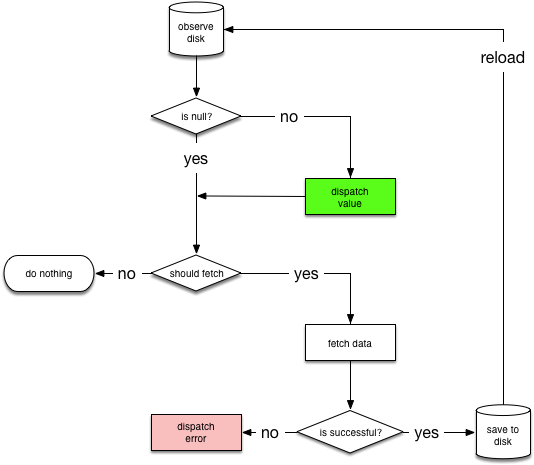

应用程序架构指南
本指南使用于具有构建应用程序基础并且想了解构建强大、优质的应用程序的最佳实践和推荐架构的开发人员。
注：本指南假定读者熟悉 Android Framework。如果你是一个应用程序开发的新手，请参阅入门指南系列培训，其中包含了本指南先决条件的相关主题。
应用开发者面临的常见问题
在大多数情况下，桌面应用程序在启动器快捷方式中有一个单一的入口并且作为单独的独立进程运行，与桌面应用程序不同，Android 应用具有更复杂的结构。一个典型的 Android 应用是由多个应用程序组件构成的，包括 activity，fragment，service，content provider 和 broadcast receiver。
这些应用程序组件中的大部分声明在由 Android OS 使用的应用程序清单中，用来决定如何将应用融入到用户设备的整体体验中。尽管如前所述，传统的桌面应用程序作为独立进程运行，但是正确的编写 Android 应用程序需要更加灵活，因为用户会同过设备上不同的应用程序组织成自己的方式不断切换流程和任务。
例如，考虑下在你喜欢的社交网络应用中分享照片时会发生什么。该应用会触发一个启动相机的 intent，从该 intent 中 Android OS 会启动一个相机应用来处理这个请求。在此刻，用户离开社交网络应用但是用户的体验是无缝的。相机应用转而可能会触发其它的 intent，例如启动文件选择器，这可能会启动另一个应用。最终用户回到社交网络应用并且分享照片。此外，在这个过程中的任何时刻用户都有可能会被一个电话打断，并且在结束通话后再回来继续分享照片。
在 Android 中，这种应用切换行为很常见，所以你的应用程序必须正确处理这些流程。记住，移动设备的资源是有限的，所以在任何时候，操作系统都可能会杀死一些应用为新的应用腾出空间。
其中的重点是应用程序组件可能会被单独和无序的启动，并且可能会被用户或系统在任何时候销毁。因为应用程序组件是短暂的，并且其声明周期（什么时候被创建和销毁）不受你控制，所以不应该在应用程序组件中存储任何应用数据或状态，同时应用程序组件不应该相互依赖。
常见的架构原则
如果不能在应用程序组件中存储应用数据和状态，那么应该如何构建应用？
最重要的是在应用中要专注于关注点分离。一个常见的错误是在 Activity 或 Fragment 中编写所有的代码。任何不是处理 UI 或 操作系统交互的代码都不应该在这些类中。保持它们尽可能的精简可以避免许多与生命周期有关的问题。不要忘记你不拥有这些类，它们只是体现了 OS 和 应用之间协议的粘合类。Android OS 可能会因为用户交互或其他因素（如低内存）的原因在任何时候销毁它们。最好尽量减少对它们的依赖以提供一个稳固的用户体验。
第二个重要的原则是应该用 Model 驱动 UI，最好是持久化的 Model。持久化是最佳的原因有两个：一是如果 OS 销毁应用释放资源，用户不用担心丢失数据；二是即使网络连接不可靠或者是断开的，应用仍将继续运行。Model 是负责处理应用数据的组件。Modle 独立于应用中的 View 和应用程序组件，因此 Model 和这些组件的生命周期问题隔离开了。保持 UI 代码精简并且摒除应用的逻辑使其更易于管理。基于 Model 类构建的应用程序其管理数据的职责明确，使应用程序可测试并且稳定。
推荐的应用程序架构
在本节中，我们将通过一个用例来演示如何使用 Architecture Components 构建应用程序。
注：不可能有一种应用程序的编写方式对于每种情况都是最好的。话虽如此，这个推荐的架构应该是大多数用例的良好起点。如果你已经有一种很好的应用程序编写方式则不需要改变。
假设我们正在构建一个显示用户个人信息的 UI。用户的个人信息将使用 REST API 从我们自己的私有后端获取。
构建用户界面
UI 包含一个 fragment 文件 UserProfileFragment.java 和其布局文件 user_profile_layout.xml。
为了驱动 UI，数据模型需要持有两个数据元素。
- 用户 ID ：用户的标识符。最好使用 fragment 的参数将用户 ID 传到 fragment 中。如果 Android OS 销毁进程，该 ID 将会被保存，以便下次应用重启时该 ID 可用。
- 用户对象：保存用户数据的普通 Java 对象（POJO）。
我们将会基于 ViewModel 来创建一个 UserProfileViewModel 来保存这些信息。
ViewModel 为指定的 UI 组件（如：fragment 或 activity）提供数据，并且负责与数据处理的业务部分的交互，例如：调用其它组件获取数据或转发用户的操作。ViewModel 对于 View 并不了解并且不受配置改变（如：由于旋转导致 activity 的重新创建）的影响
现在有 3 个文件
- user_profile.xml：屏幕上的 UI 定义。
- UserProfileViewModel.java：为 UI 准备数据的类。
- UserProfileFragment.java：用于在 ViewModel 中显示数据并对用户交互做出反应的 UI 控制器。
下面是我们的初始实现（简单起见省略布局文件）：
public class UserProfileViewModel extends ViewModel {
private String userId;
private User user;
public void init(String userId) {
this.userId = userId;
}
public User getUser() {
return user;
}
}
public class UserProfileFragment extends LifecycleFragment {
private static final String UID_KEY = "uid";
private UserProfileViewModel viewModel;
@Override
public void onActivityCreated(@Nullable Bundle savedInstanceState) {
super.onActivityCreated(savedInstanceState);
String userId = getArguments().getString(UID_KEY);
viewModel = ViewModelProviders.of(this).get(UserProfileViewModel.class);
viewModel.init(userId);
}
@Override
public View onCreateView(LayoutInflater inflater,
@Nullable ViewGroup container, @Nullable Bundle savedInstanceState) {
return inflater.inflate(R.layout.user_profile, container, false);
}
}
注：上面的例子继承了 LifecycleFragment 而不是 Fragment 类。在 Architecture Components 中的生命周期 API 稳定后， Android 支持包中的 Fragment 类将会实现 LifecycleOwner 接口。
现在我们有了 3 个代码模块，怎样连接它们？最后，当 ViewModel 的用户字段被设置时，需要一种方式来通知 UI。这正是 LiveData 的用武之地。
LiveData 是一个可观察的数据持有者。它允许应用程序中的组件观察 LiveData 进行改变，而不会在组件之间创建显示的，固定的依赖。另外，LiveData 还遵守应用程序组件（如：activity，fragment，service）的生命周期状态，并且防止对象泄漏使应用不会消耗更多的内存。
注：如果你已经再使用像 RxJava 或 Agera 的库，你可以继续使用它们而不用换成 LiveData。但是当使用它们或其它的方式时，请确保正确处理生命周期，如：当相关 LifecycleOwner 停止时暂停数据流或在 LifecycleOwner 被销毁时销毁数据流。可以添加 android.arch.lifecycle:reactivestreams 工具，和其它的响应流库（如：RxJava2）一起使用 LiveData。
将 UserProfileViewModel 中的 User 字段替换为 LiveData ，以便在更新数据时可以通知 fragment。 LiveData 的好处在于它是生命周期感知的，并且可以在不再被需要的时候自动清除引用。
public class UserProfileViewModel extends ViewModel {
...
// private User user;
private LiveData<User> user;
public LiveData<User> getUser() {
return user;
}
}
修改 UserprofileFragment 来观察数据并更新 UI。
@Override
public void onActivityCreated(@Nullable Bundle savedInstanceState) {
super.onActivityCreated(savedInstanceState);
viewModel.getUser().observe(this, user -> {
// 更新 UI
});
}
每次更新用户数据时，将会调用 onChange) 回调并且更新 UI。
如果你熟悉其它库的可观察回调的使用，可能已经意识到我们没有重写 fragment 的 onStop() 方法来停止观察数据。这对于 LiveData 来说是不必要的，因为 LiveData 是证明周期感知的，这意味着除非 fragment 处于活动状态（收到了 onStart() 但还没有收到 onStop()），否则它不会调用回调。当 fragment 收到 onDestroy() 时 LiveData 会自动移除观察者。
我们没有做任何事情来特别是处理配置的变化（如：用户旋转屏幕）。当配置发生变化时 ViewModel 将会自动恢复，所以，只要新的 fragment 启动，它将会收到属于 ViewModel 的相同实例，并且使用最新的数据立即调用回调。这就是为什么 ViewModel 不应该直接引用 View，ViewModel 可能存活的比 View 的生命周期长。请参阅 ViewModel 的生命周期。
获取数据
我们已经将 ViewModel 链接到了 fragment，但是 ViewModel 怎样获取数据呢？这个例子中，假设我们的后端提供了一个 REST API。我们将会使用 Retrofit 库来访问后端，你也可以自由的使用其它库来达到同样的目的。
这是 retrofit 的 Webservice 类，用于和后端通讯：
public interface Webservice {
/**
* @GET declares an HTTP GET request
* @Path("user") annotation on the userId parameter marks it as a
* replacement for the {user} placeholder in the @GET path
*/
@GET("/users/{user}")
Call<User> getUser(@Path("user") String userId);
}
一个简单的 ViewModel 实现可以直接调用 Webservice 获取数据并将其分配给用户对象。即使这样可以使用，但是应用程序将会随着增长而难以维护。将太多的职责交给 ViewModel 这违反了我们前面提到的关注点分离的原则。此外，ViewModel 的作用域依赖于 Activity 或 Fragment 的生命周期，因此在 Activity 或 Fragment 的生命周期结束时丢失所有的数据是一种不好的用户体验。故而，我们的 ViewModel 将把这项工作委托给一个新的 Repository 模块。
Repository 模块负责处理数据操作。它们为应用程序的其它部分提供了一个干净的 API。它们知道在数据更新时从哪里获取数据和调用哪些 API。可以将其视为不同数据源（持久化模型，Web 服务，缓存等）之间的中间层。
下面的 UserRepository 类使用 WebService 来获取用户数据。
public class UserRepository {
private Webservice webservice;
// ...
public LiveData<User> getUser(int userId) {
// 这是最佳的实现，下面会有解释
final MutableLiveData<User> data = new MutableLiveData<>();
webservice.getUser(userId).enqueue(new Callback<User>() {
@Override
public void onResponse(Call<User> call, Response<User> response) {
// 为了简单起见省略错误的情况
data.setValue(response.body());
}
});
return data;
}
}
虽然 Repository 模块看起来是不必要的，但是它起着一个重要的作用；它抽象了应用程序其它部分的数据源。现在 ViewModel 不知道数据是由 Webservice 获取的，这意味着可以根据需求将其切换为其它实现。
注：为了简单起见，我们忽略了网络错误的情况。有关于暴露错误和加载状态的可选实现方式，请参阅附录：。暴露网络状态
管理组件之间的依赖
上面的 UserRepository 类需要一个 Webservice 的实例来完成其工作。可以简单的创建 Webservice，但是这需要知道 Webservice 的依赖来构造它。这将会显著的使代码复杂和重复（例如：需要 Webservice 实例的每个类都需要知道如何使用它的依赖来构造它）。另外，UserRepostory 可能不是唯一需要 Webservice 的类。如果每个类都创建一个新的 Webservice，这将会造成非常大的资源负担。
有两种模式可以解决这个问题：
- 依赖注入：依赖注入允许类定义其依赖而不构造它们。在运行时，另一个类负责提供这些依赖。推荐使用 Google 的 Dagger 2 库在 Android 应用中实现依赖注入。Dagger 2 通过遍历依赖关系树自动构建对象并为依赖提供编译时保障。
- 服务定位：服务定位提供了一个注册表，类可以从中获取它们的依赖关系，而不是构造它们。与依赖注入（DI）相比，服务定位实现起来相对容易，所以如果不熟悉 DI，请使用服务定位代替。
这些模式允许你扩展代码，因为它们提供清晰的模式来管理依赖关系，而不会重复代码或增加复杂性。两者都允许替换实现进行测试；这是使用它们的主要好处之一。
在这个例子中，我们将使用 Dagger 2 来管理依赖。
连接 ViewModel 和 Repository
修改 UserProfileViewModel 以使用 Repository。
public class UserProfileViewModel extends ViewModel {
private LiveData<User> user;
private UserRepository userRepo;
@Inject // UserRepository 参数由 Dagger 2 提供
public UserProfileViewModel(UserRepository userRepo) {
this.userRepo = userRepo;
}
public void init(String userId) {
if (this.user != null) {
// ViewModel 是由 Fragment 创建的
// 所以我们知道 userId 不会改变
return;
}
user = userRepo.getUser(userId);
}
public LiveData<User> getUser() {
return this.user;
}
}
缓存数据
上述 Repository 的实现对于抽象调用 Web 服务是很好的，但是因为它仅依赖于一个数据源所以不是很实用。
上述 UserRepository 的实现的问题是在获取到数据之后没有把数据保存下来。如果用户离开 UserProfileFragment 然后返回回来，应用将会重新获取数据。这样是很不好的，原因有两个：一是浪费了宝贵的网络带宽；二是迫使用户等待新的查询完成。为了解决这个问题，我们将在 UserRepository 中添加一个新的数据源，用以在内存中缓存 User 对象。
@Singleton // 告诉 Dagger 这个类只应该构造一次
public class UserRepository {
private Webservice webservice;
// 简单的内存缓存，为了简单忽略相关细节
private UserCache userCache;
public LiveData<User> getUser(String userId) {
LiveData<User> cached = userCache.get(userId);
if (cached != null) {
return cached;
}
final MutableLiveData<User> data = new MutableLiveData<>();
userCache.put(userId, data);
// 这还不是最好的但比以前的好。
// 一个完整的实现必须处理错误的情况。
webservice.getUser(userId).enqueue(new Callback<User>() {
@Override
public void onResponse(Call<User> call, Response<User> response) {
data.setValue(response.body());
}
});
return data;
}
}
持久化数据
在当前的实现中，如果用户旋转屏幕或离开并返回应用，已存在的 UI 将会立即可见，因为 Repository 从内存缓存中取回数据。但是，如果用户离开应用并在几个小时后（Android OS 已经杀死进程后）返回又会发生什么？
如果是目前的实现，将会需要再次从网络获取数据。这不仅是一个不好的用户体验，并且也是浪费，因为这将会使用移动数据重新获取同样的数据。可以通过缓存 Web 请求来简单的解决这个问题，但是这会导致新的问题。如果相同的用户数据来自另一种请求并显示（例如：获取朋友列表）将会怎样？这时应用会显示不一致的数据，这是最令人困惑的用户体验。例如：相同用户的数据可能会显示的不同，因为朋友列表的请求和用户个人信息的请求可能会在不同的时间执行。应用程序需要合并它们以避免显示不一致的数据。
解决这个问题的正确方法是使用持久化模型。这就是持久化库 Room 的用武之地了。
Room 是一个以最少的样板代码提供本地数据持久化的对象映射库。在编译时，它会根据模式验证每个查询，所以损坏的 SQL 查询只会导致编译时错误，而不是运行时崩溃。Room 抽象出一些使用原始 SQL 表查询的底层实现细节。它还允许观察数据库数据（包括集合和连接查询）的变化，并通过 LiveData 对象暴露这些变化。另外，它明确定义了线程约束以解决常见问题（如在主线程访问存储）。
使用 Room，需要定义我们的局部模式。首先，用 @Entity 注释 User 类，将其标记为数据库中的一个表。
@Entity
class User {
@PrimaryKey
private int id;
private String name;
private String lastName;
// 字段的 get 和 set 方法
}
然后，通过继承 RoomDatabase 为应用创建一个数据库。
@Database(entities = {User.class}, version = 1)
public abstract class MyDatabase extends RoomDatabase {
}
请注意，MyDatabase 是抽象类，Room 会自动提供其实现类。详细信息请参阅 Room 的文档。
现在需要一种方法来将用户数据插入数据库。为此，我们将创建一个数据库访问对象（ DAO ）。
@Dao
public interface UserDao {
@Insert(onConflict = REPLACE)
void save(User user);
@Query("SELECT * FROM user WHERE id = :userId")
LiveData<User> load(String userId);
}
然后，在数据库类中引用 DAO。
@Database(entities = {User.class}, version = 1)
public abstract class MyDatabase extends RoomDatabase {
public abstract UserDao userDao();
}
请注意，load 方法的返回值是 LiveData。Room 知道数据库何时被修改，当数据发生变化时，它会通知所有处于活动状态的观察者。使用 LiveData 是高效的是因为它只有在至少有一个处于活动状态的观察者时才会更新数据。
现在修改 UserRepository 来整合 Room 的数据源。
@Singleton
public class UserRepository {
private final Webservice webservice;
private final UserDao userDao;
private final Executor executor;
@Inject
public UserRepository(Webservice webservice, UserDao userDao, Executor executor) {
this.webservice = webservice;
this.userDao = userDao;
this.executor = executor;
}
public LiveData<User> getUser(String userId) {
refreshUser(userId);
// 直接从数据库返回一个 LiveData。
return userDao.load(userId);
}
private void refreshUser(final String userId) {
executor.execute(() -> {
// 在后台线程中运行
// 检查最近是否获取过 user
boolean userExists = userDao.hasUser(FRESH_TIMEOUT);
if (!userExists) {
// 刷新数据
Response response = webservice.getUser(userId).execute();
// TODO 检查错误等。
// 更新数据库。LiveData 将会自动刷新
// 所以除了更新数据库外不需要任何操作。
userDao.save(response.body());
}
});
}
}
请注意，即使我们更改了 UserRepository 中的数据来源，我们也不需要更改 UserProfileViewModel 或 UserProfileFragment。这是抽象带来的灵活性。这样也非常易于测试，因为在测试 UserProfileViewModel 可以提供一个假的 UserRepository。
现在我们的代码是完整的，如果用户日后再回到相同的 UI，他们会立即看到用户信息，因为我们已经将其持久化了。同时，如果数据过期，Repository 将会在后台更新数据。当然，根据你的用例，如果持久化的数据太旧你可能不希望显示它们。
在一些用例中，如下拉刷新，在进行网络操作时显示用户数据对于 UI 来说非常重要。将 UI 操作从实际数据中分离是一个很好的做法，因为其可能由于各种原因而被更新（例如：如果获取一个朋友列表，用户可能会再次获取到相同数据并触发 LiveData 更新）。从 UI 的角度来看，动态请求实际上只是另一个数据点，类似其它任何数据片段（如：User 对象）
这种用例有两种常见的解决方案：
- 更改 getUser 以返回包含网络操作状态的 LiveData。在附录：暴露网络状态部分提供了一个实现例子。
- 在 Repository 类中提供一个可以返回 User 刷新状态的公共方法。如果只是为了响应明确的用户操作而在 UI 中显示网络状态（如：下拉刷新），则这种方式是更好的选择。
单一数据源
不同的 REST API 接口返回相同的数据是很常见的。例如，如果后端有另一个返回朋友列表的接口，相同的用户对象（也许是不同的粒度）可能来自两个不同的 API 接口。如果 UserRepository 把从 Webservice 请求获取到的响应原样返回，码么 UI 可能会显示不一致的数据，因为在这些请求之间数据可能在服务端发生了改变。这就是为什么在 UserRepository 的实现中 Web 服务的回调只是将数据保存到了数据库。然后，对数据库的更改将会触发处于活动状态的 LiveData 对象上的回调。
在这个模型中，数据库服务作为单一数据源，应用程序的其它部分通过 Repository 来访问它。无论是否是否磁盘缓存，建议 Repository 指定一个数据源作为应用程序其它部分的单一数据源。
测试
我们已经提到分离的好处之一是可测试性。让我们看看如何测试每个代码模块。
用户界面或用户交互：这将是唯一一次需要 Android UI Instrumentation test。测试 UI 代码的最佳方式是创建一个 Espresso 测试。可以创建一个 fragment 并为其提供一个模拟的 ViewModel。因为 fragment 只和 ViewModel 交互，随意模拟 ViewModel 足以完全测是 UI。
ViewModel：可以使用 JUnit test 来测试 ViewModel。只需要模拟 UserRepository 来测试它。
UserRepository：也可以使用 JUnit test 来测试 UserRepository。需要模拟 Webservice 和 DAO。可以测试 UserRepository 是否进行了正确的 Web 服务调用，将结构保存到数据库，如果数据被缓存且是最新的，则不会发起任何不必要的请求。因为 WebService 和 UserDao 都是接口，所以可以模拟它们或者为更复杂的测试用例创建假的实现。
UserDao：推荐使用 Instrumentation 测试的方式测试 DAO 类。因为 Instrumentation 测试不需要任何 UI，它们会运行的很快。对于每个测试，可以创建一个内存数据库以确保测试没有任何副作用（例如：改变磁盘上的数据库文件）。
Room 还允许指定数据库实现，所以可以通过向其提供 SupportSQLiteOpenHelper 的 JUnit 实现来测试它。通常不推荐这种方式，因为设备上运行的 SQLite 版本可能和主机上的 SQLite 版本不同。
Webservice：重点是使测试相对于外部独立，所以 Webservice 的测试要避免通过网络调用后端。有许多库可以帮助完成该测试。例如：MockWebServer 是一个很好的库，可以帮助为测试创建一个假的本地服务。
测试工件架构组件提供了一个 maven 工件来控制其后台线程。在 android.arch.core:core-testing 工件中，有两个 JUnit 规则：
InstantTaskExecutorRule：该规则可用于强制架构组件立即执行调用线程上的任何后台操作。
CountingTaskExecutorRule：该规则可用于 Instrumentation 测试，以等待架构组件的后台操作，或将其连接到 Espresso 作为闲置资源。
最终的架构
下图显示了推荐架构中的所有模块以及它们如何互相交互：

指导原则
编程是一个创作领域，构建 Android 应用也不例外。有许多方法来解决问题，无论是在多个 activity 或 fragment 之间传递数据，是获取远程数据并为了离线模式将其持久化到本地，还是特殊应用遭遇的其它常见情况。
虽然一下建议不是强制性的，但是以我们的经验，从长远来看，遵循这些建议将会使代码库更健壮，易测试和易维护。
在 manifest 中定义的入口点，如：acitivy，fragment，broadcast receiver 等，不是数据源。相反，它们应该只是协调与该入口点相关的数据子集。由于每个应用程序组件的存活时间很短，这取决于用户与其设备的交互以及运行时的总体状况，所以任何入口点都不应该成为数据源。
严格的在应用程序的各个模块之间创建明确的责任界限。例如：不在代码库中的多个类或包中扩散从网络加载数据的代码。同样，不要将无关的责任（如：数据缓存和数据绑定）放到同一个类中。
每个模块尽可能少的暴露出来。不要视图创建暴露模块内部实现细节的“只一个”的快捷方式。你可能会在短期内节省一些时间，但是随着代码库的发展，你将会多次偿还更多的基数债务。
当定义模块间的交互时，请考虑如何让每个模块可以独立的测试。例如，拥有一个用于从网络获取数据且定义良好的 API 的模块，将会使其更易于测试在本地数据库中持久化数据。相反，如果将两个模块的逻辑放在一个地方，或者将网络代码扩散到整个代码库，测试将会变的非常困难（并非不可能）。
应用程序的核心是使其脱颖而出。不要花费时间重复造轮子或一次又一次的编写相同的样板代码。相反，将精力集中在使应用程序独一无二上，让 Android Architecture Components 和其它的优秀的库来处理重复的样板代码。
持久化尽可能多的相关最新数据，以便应用程序在设备处于离线模式时还可以使用。即使你可以享用稳定高速的网络连接，但是你的用户可能无法享用。
Repository 应该指定一个数据源作为单一数据源。每当应用程序需要访问数据时，数据应该始终来源于单一数据源。有关更多信息，请参阅单一数据源
附录：暴露网络状态
在上面推荐的应用程序架构部分，为了保持示例简单我们故意忽略网络错误和加载状态。在本节中，我们演示一种通过 Resource 类暴露网络状态来封装数据和其状态。
以下是一个实现的例子：
// 描述数据和其状态的类
public class Resource<T> {
@NonNull public final Status status;
@Nullable public final T data;
@Nullable public final String message;
private Resource(@NonNull Status status, @Nullable T data, @Nullable String message) {
this.status = status;
this.data = data;
this.message = message;
}
public static <T> Resource<T> success(@NonNull T data) {
return new Resource<>(SUCCESS, data, null);
}
public static <T> Resource<T> error(String msg, @Nullable T data) {
return new Resource<>(ERROR, data, msg);
}
public static <T> Resource<T> loading(@Nullable T data) {
return new Resource<>(LOADING, data, null);
}
}
因为从磁盘中获取并显示数据同时再从网络获取数据是一种常见的用例。我们将创建一个可以在多个地方使用的帮助类 NetworkBoundResource。下面是 NetworkBoundResource 的决策树。

它通过观察资源的数据库。当首次从数据库加载条目时，NetworkBoundResource 检查返回结果是否足够好可以被发送和（或）应该从网络获取数据。请注意，他们可能同时发生，因为你可能会希望在显示缓存数据的同时从网络更新数据。
如果网络调用成功，则将返回数据保存到数据库中并重新初始化数据流。如果网络请求失败，直接发送一个错误。
注：将新的数据保存到磁盘后，要从数据库重新初始化数据流，但是通常不需要这样做，因为数据库将会发送变更。另一方面，依赖数据库发送变更会有一些不好的副作用，因为在数据没有变化时如果数据库会避免发送更改将会使其中断。我们也不希望发送从网络返回的结果，因为这违背的单一数据源原则（即使在数据库中有触发器会改变保存值）。我们也不希望在没有新数据的时候发送 SUCCESS，因为这会给客户端发送错误信息。
以下是 NetworkBoundResource 类为其子类提供的公共 API：
// ResultType: Resource 数据的类型
// RequestType: API 响应的类型
public abstract class NetworkBoundResource<ResultType, RequestType> {
// 调用该方法将 API 响应的结果保存到数据库中。
@WorkerThread
protected abstract void saveCallResult(@NonNull RequestType item);
// 调用该方法判断数据库中的数据是否应该从网络获取并更新。
@MainThread
protected abstract boolean shouldFetch(@Nullable ResultType data);
// 调用该方法从数据库中获取缓存数据。
@NonNull @MainThread
protected abstract LiveData<ResultType> loadFromDb();
// 调用该方法创建 API 请求。
@NonNull @MainThread
protected abstract LiveData<ApiResponse<RequestType>> createCall();
// 获取失败时调用。
// 子类可能需要充值组件（如：速率限制器）。
@MainThread
protected void onFetchFailed() {
}
// 返回一个代表 Resource 的 LiveData。
public final LiveData<Resource<ResultType>> getAsLiveData() {
return result;
}
}
请注意，上述类定义了两个类型参数（ResultType，RequestType），因为从 API 返回的数据类型可能和本地使用的数据类型不同。
还要注意，上述代码使用 ApiResponse 作为网络请求，ApiResponse 是对于 Retrofit2.Call 类的简单封装，用以将其响应转换为 LiveData。
以下是 NetworkBoundResource 类的其余实现部分。
public abstract class NetworkBoundResource<ResultType, RequestType> {
private final MediatorLiveData<Resource<ResultType>> result = new MediatorLiveData<>();
@MainThread
NetworkBoundResource() {
result.setValue(Resource.loading(null));
LiveData<ResultType> dbSource = loadFromDb();
result.addSource(dbSource, data -> {
result.removeSource(dbSource);
if (shouldFetch(data)) {
fetchFromNetwork(dbSource);
} else {
result.addSource(dbSource,
newData -> result.setValue(Resource.success(newData)));
}
});
}
private void fetchFromNetwork(final LiveData<ResultType> dbSource) {
LiveData<ApiResponse<RequestType>> apiResponse = createCall();
// 重新附加 dbSource 作为新的来源,
// 它将会迅速发送最新的值。
result.addSource(dbSource,
newData -> result.setValue(Resource.loading(newData)));
result.addSource(apiResponse, response -> {
result.removeSource(apiResponse);
result.removeSource(dbSource);
//noinspection ConstantConditions
if (response.isSuccessful()) {
saveResultAndReInit(response);
} else {
onFetchFailed();
result.addSource(dbSource,
newData -> result.setValue(
Resource.error(response.errorMessage, newData)));
}
});
}
@MainThread
private void saveResultAndReInit(ApiResponse<RequestType> response) {
new AsyncTask<Void, Void, Void>() {
@Override
protected Void doInBackground(Void... voids) {
saveCallResult(response.body);
return null;
}
@Override
protected void onPostExecute(Void aVoid) {
// 指定请求一个最新的实时数据。
// 否则，会得到最新的缓存数据，并且可能不会由从网络获取的最新数据更新。
result.addSource(loadFromDb(),
newData -> result.setValue(Resource.success(newData)));
}
}.execute();
}
}
现在，可以使用 NetworkBoundResource 在 Repository 中编写磁盘和网络绑定 User 的实现。
class UserRepository {
Webservice webservice;
UserDao userDao;
public LiveData<Resource<User>> loadUser(final String userId) {
return new NetworkBoundResource<User,User>() {
@Override
protected void saveCallResult(@NonNull User item) {
userDao.insert(item);
}
@Override
protected boolean shouldFetch(@Nullable User data) {
return rateLimiter.canFetch(userId) && (data == null || !isFresh(data));
}
@NonNull @Override
protected LiveData<User> loadFromDb() {
return userDao.load(userId);
}
@NonNull @Override
protected LiveData<ApiResponse<User>> createCall() {
return webservice.getUser(userId);
}
}.getAsLiveData();
}
}